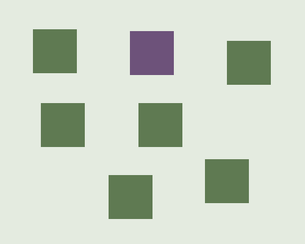
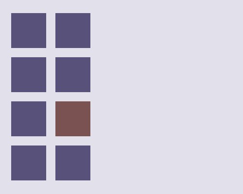
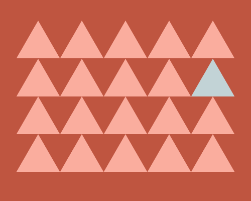

To make the call-to-action the most prominent element on the page, choose its colour first. Then, the rest of the colours are generated.
Before we look towards branding, and palettes, this system follows the first principle of Form Follows Function and therefore asks "How can colour be functional?".
As the Entrepreneurship System is focused entirely on converting landing pages, the call to action is the most vital element to be seen on a page.
The function of the call to action colour is to be clicked.
The reason that the big red button is big and red is because it stands out amongst other things. How would you hide a big red button? Either by covering it, but more relevantly, by putting it with other big red buttons.
The problem this is solving is that when building a new landing page, it is far to common to get stuck on colour palettes and tones and end up, after hours of work, a page with no coherence.
Take the following images as an example.



Do you notice how regardless of shape, size, and location the coloured element stands out and your eye was drawn towards it.
From this idea we can make a call to action stand out by using a colours for everything else being completely different. We can simply accomplish this by starting with the hue of our call to action, and then basing all other colours on the opposite side of the colour wheel.
If our call to action is yellow, then our background and other elements need to be purple.
If our call to action is green, then our background and other elements need to be red.
If our call to action is orange, then our background and other elements need to be blue.
We can therefore extend this to other variables when it comes to colour.
Firstly, if our call to action has high saturation, then the background and other elements need to be desaturated, and visa versa.
Also, if our call to action has a lot of white added to it (lightness), then the background and other elements need to have very little white added, and visa versa.
This means if the call to action is:
Hue: 50 Saturation: 95% Lightness: 80%
Then the background and other elements need to be:
Hue: 50 + 180 = 230 - Add or minus 180 to get the other side of the colour wheel Saturation: 5% Lightness: 20%
As long as we remain under 50% for the saturation and lightness, we can generate a whole palette of colours and be assured that our call to action will stand out.
The colour that is used for the call to action on page.
The colour that is used for backgrounds and other elements.
Not full black, but slightly off, based on the primary colour.
Not full white, but slightly off, based on the primary colour.
This is present in the CSS as
:root {
--call-to-action-seed: 0;
--call-to-action: hsl(var(--accent-seed), 100%, 80%);
--black: hsl(calc(var(--accent-seed) - 180), 50%, 8%);
--white: hsl(calc(var(--accent-seed) - 180), 5%, 95%);
--primary: hsl(calc(var(--accent-seed) - 180), 50%, 30%);
}
Put call to actions on either black or primary backgrounds, as on white the lightness will lose the attention needed on the button.
section .hero {
background-color: var(--black) /* or var(--primary) */
color: var(--white)
}
a .call-to-action {
display: inline-block;
background-color: var(--call-to-action);
color: var(--black);
text-decoration: none;
padding: 0.75rem 1.5rem;
font-weight: bold;
border-radius: 8px;
text-align: center;
}
If the colours are not exactly to expected, then change the Saturation to get as close as possible.
Don't try and start from the Primary colour and make the Call to Action, it will just give you premature grey hairs.
As the Call to Action colour has a large amount of white added, putting it on a white background means it gets lost. Generally keep "light" sections for copy like "About Me", "How it Works", etc.